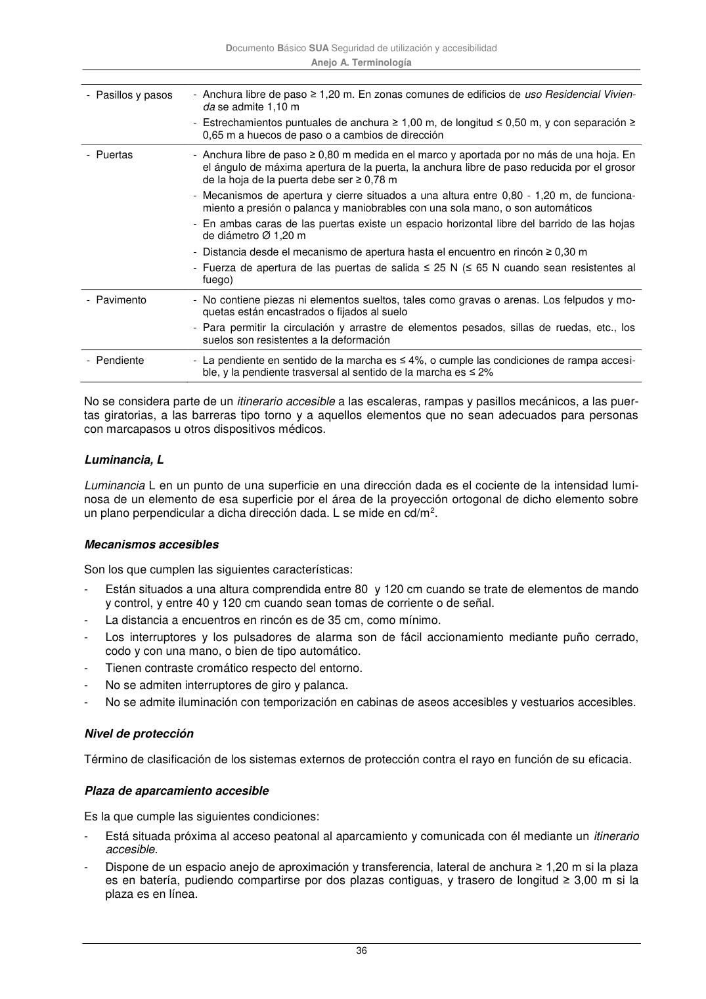

DB-SUA · Plaza de aparcamiento accesible · versión 2022-06-14 · capa oficial
Formatos: JSON compacto · Markdown · PDF fuente
Ámbito del documento · texto del ámbito · documento y tablas
ID técnico a0133 · PDF pág. 36 · jerarquía no validada por persona · contrastado con el literal de la página 36 (marcador PDF); no validado por persona · padre: a0129
Documento Básico SUA Seguridad de utilización y accesibilidad Anejo A. Terminología 36 - Pasillos y pasos - Anchura libre de paso ≥ 1,20 m. En zonas comunes de edificios de uso Residencial Vivien- da se admite 1,10 m - Estrechamientos puntuales de anchura ≥ 1,00 m, de longitud ≤ 0,50 m, y con separación ≥ 0,65 m a huecos de paso o a cambios de dirección - Puertas - Anchura libre de paso ≥ 0,80 m medida en el marco y aportada por no más de una hoja. En el ángulo de máxima apertura de la puerta, la anchura libre de paso reducida por el grosor de la hoja de la puerta debe ser ≥ 0,78 m - Mecanismos de apertura y cierre situados a una altura entre 0,80 - 1,20 m, de funciona- miento a presión o palanca y maniobrables con una sola mano, o son automáticos - En ambas caras de las puertas existe un espacio horizontal libre del barrido de las hojas de diámetro Ø 1,20 m - Distancia desde el mecanismo de apertura hasta el encuentro en rincón ≥ 0,30 m - Fuerza de apertura de las puertas de salida ≤ 25 N (≤ 65 N cuando sean resistentes al fuego) - Pavimento - No contiene piezas ni elementos sueltos, tales como gravas o arenas. Los felpudos y mo- quetas están encastrados o fijados al suelo - Para permitir la circulación y arrastre de elementos pesados, sillas de ruedas, etc., los suelos son resistentes a la deformación - Pendiente - La pendiente en sentido de la marcha es ≤ 4%, o cumple las condiciones de rampa accesi- ble, y la pendiente trasversal al sentido de la marcha es ≤ 2% No se considera parte de un itinerario accesible a las escaleras, rampas y pasillos mecánicos, a las puer- tas giratorias, a las barreras tipo torno y a aquellos elementos que no sean adecuados para personas con marcapasos u otros dispositivos médicos. Luminancia, L Luminancia L en un punto de una superficie en una dirección dada es el cociente de la intensidad lumi- nosa de un elemento de esa superficie por el área de la proyección ortogonal de dicho elemento sobre un plano perpendicular a dicha dirección dada. L se mide en cd/m2. Mecanismos accesibles Son los que cumplen las siguientes características: - Están situados a una altura comprendida entre 80 y 120 cm cuando se trate de elementos de mando y control, y entre 40 y 120 cm cuando sean tomas de corriente o de señal. - La distancia a encuentros en rincón es de 35 cm, como mínimo. - Los interruptores y los pulsadores de alarma son de fácil accionamiento mediante puño cerrado, codo y con una mano, o bien de tipo automático. - Tienen contraste cromático respecto del entorno. - No se admiten interruptores de giro y palanca. - No se admite iluminación con temporización en cabinas de aseos accesibles y vestuarios accesibles. Nivel de protección Término de clasificación de los sistemas externos de protección contra el rayo en función de su eficacia. Plaza de aparcamiento accesible Es la que cumple las siguientes condiciones: - Está situada próxima al acceso peatonal al aparcamiento y comunicada con él mediante un itinerario accesible. - Dispone de un espacio anejo de aproximación y transferencia, lateral de anchura ≥ 1,20 m si la plaza es en batería, pudiendo compartirse por dos plazas contiguas, y trasero de longitud ≥ 3,00 m si la plaza es en línea.

PDF fuente redistribuible: copia fiel enlazada en esta página (SHA256 verificado).